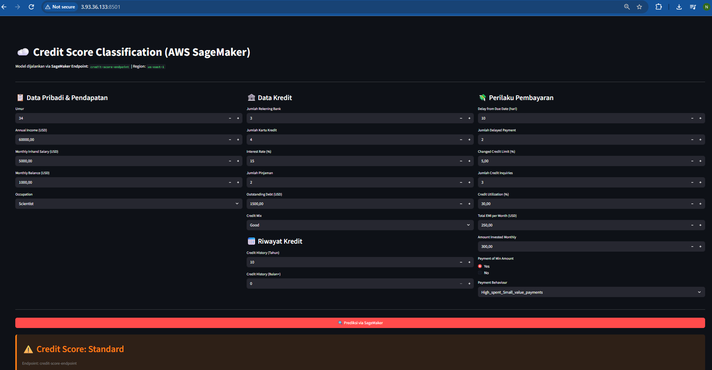
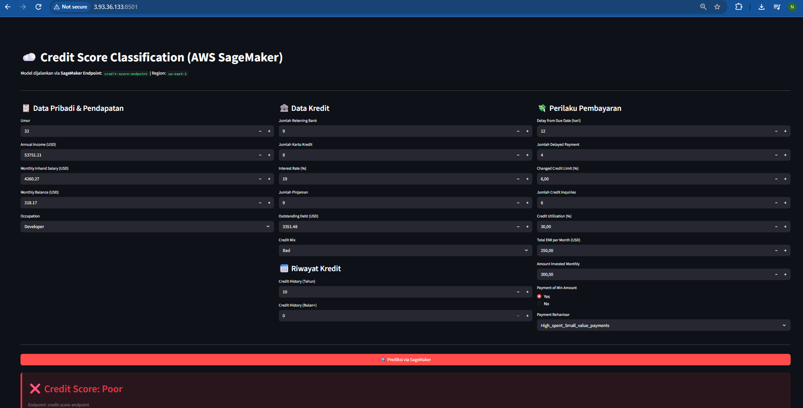
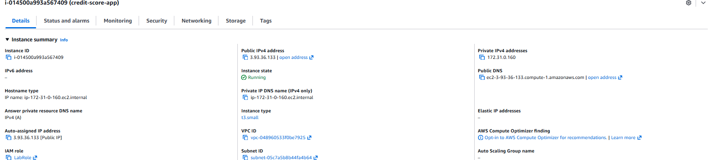
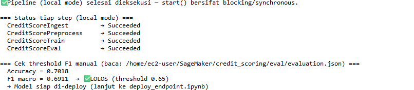
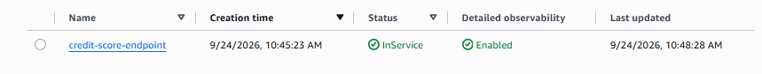
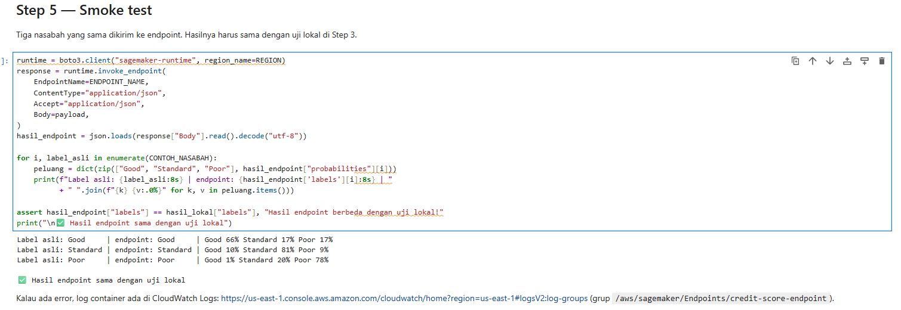

Machine learning · Model deployment
Credit Score Classification
Model yang menggolongkan skor kredit nasabah menjadi Good, Standard, atau Poor dari data keuangan dan perilaku pembayaran, beserta seluruh jalur dari data mentah sampai model yang bisa dipakai. Proyek akhir mata kuliah Model Deployment, BINUS University.
- 25.000catatan bulanan
- 11.254nasabah
- 4model dibandingkan
- 0,69F1 macro data uji
Masalah
Lembaga keuangan perlu menilai risiko kredit setiap nasabah sebelum memberi pinjaman atau menaikkan limit. Penilaian manual lambat dan tidak konsisten. Proyek ini membangun model yang memberi label Good, Standard, atau Poor dari 21 atribut nasabah, seperti pendapatan, jumlah pinjaman, keterlambatan bayar, dan lama riwayat kredit.
Fokus mata kuliahnya adalah deployment: model tidak berhenti di notebook, tetapi dikemas dalam pipeline yang bisa dijalankan ulang, dicatat di MLflow, dipakai lewat aplikasi web, dan dipindahkan ke AWS SageMaker.
Data
Dataset berisi 25.000 baris dan 28 kolom. Kelasnya tidak seimbang: Standard 53%, Poor 29%, dan Good 18%. Sebagian besar waktu habis untuk membersihkan data, karena hampir setiap kolom punya masalah:
| Masalah | Contoh | Penanganan |
|---|---|---|
| Isian pengganti yang kotor | _______, #F%$D@*&8, NM | Diganti NaN |
| Angka tersimpan sebagai teks | 20364.57_, 3_ | Karakter non-angka dibuang |
| Lama riwayat kredit berupa kalimat | 9 Years and 8 Months | Diubah jadi 116 bulan |
| Nilai salah input | umur 4824, pinjaman -100, bunga 1663% | Diganti NaN, lalu diisi median |
| Satu nasabah di banyak baris | 25.000 baris dari 11.254 nasabah | Data dibagi per nasabah |
Alur pipeline
Setiap tahap adalah satu kelas Python terpisah, dan pipeline.py menjalankannya berurutan.
- IngestionMemuat CSV dan memeriksa kolom target ada.
- PreprocessingMembersihkan data dan membaginya per nasabah: 80% latih, 20% uji.
- TrainingGridSearchCV untuk 4 model. Setiap kombinasi hyperparameter dicatat di MLflow.
- EvaluasiModel terbaik diuji sekali pada data uji.
- Deployment gateModel hanya disetujui kalau F1 macro minimal 0,65.
Keputusan penting
Data dibagi per nasabah, bukan per baris
Satu nasabah dicatat setiap bulan, sampai tujuh kali, dan datanya hampir sama dari bulan ke bulan. Kalau dibagi acak per baris, sekitar 80% baris di data uji milik nasabah yang juga ada di data latih. Model jadi dinilai pada orang yang sudah pernah dilihatnya.
Karena itu pembagian data memakai GroupShuffleSplit dan validasi silang memakai
StratifiedGroupKFold, keduanya berdasarkan ID nasabah. Dengan model yang sama, validasi
acak per baris memberi F1 macro 0,686, sedangkan validasi per nasabah 0,669. Selisihnya kecil, jadi
model tidak sekadar menghafal nasabah, tetapi skor yang lebih rendah itu yang jujur.
Nilai salah input dianggap tidak diketahui, bukan dipotong
Cara umum menangani umur 4824 adalah memotongnya ke batas atas, misalnya 90. Di data ini, cara itu memunculkan 473 nasabah yang tiba-tiba berumur tepat 90 tahun, padahal umur aslinya tidak diketahui. Di sini nilai seperti itu diganti NaN lalu diisi median. Skor model untuk kedua cara hampir sama (0,689 dan 0,690), jadi alasannya bukan skor, melainkan supaya data yang dipakai model tetap jujur.
Batas wajar tiap kolom diambil dari data, bukan ditebak. Contohnya suku bunga: nilai asli ada di 1–34%, tidak ada satu pun nilai di 35–72%, dan nilai rusak mulai dari 73%.
F1 macro sebagai metrik utama
Menebak "Standard" untuk semua nasabah sudah memberi accuracy 53%, padahal model seperti itu tidak berguna. F1 macro menghitung rata-rata ketiga kelas dengan bobot sama, jadi kelas kecil seperti Good dan Poor ikut menentukan skor.
Pembersihan yang sama saat pelatihan dan pemakaian
Model disimpan sebagai satu sklearn.Pipeline: imputasi, scaling, one-hot encoding,
lalu classifier. Aplikasi Streamlit juga memanggil fungsi pembersihan yang sama dengan pipeline
pelatihan. Dengan begitu data dari form diperlakukan persis seperti data latih.
Hasil
Empat model dibandingkan dengan validasi silang 3-fold per nasabah pada data latih, masing-masing setelah pengaturannya dipilih dengan GridSearchCV:
| Model | F1 macro validasi |
|---|---|
| Logistic Regression | 0,640 |
| Gradient Boosting | 0,653 |
| Decision Tree | 0,656 |
| Random Forest | 0,669 |
Random Forest terpilih, lalu diuji pada 5.011 baris data uji dari nasabah yang tidak pernah dilihat:
| Metrik data uji | Random Forest | Selalu menebak "Standard" |
|---|---|---|
| F1 macro | 0,689 | 0,230 |
| Accuracy | 0,693 | 0,528 |
| Recall macro | 0,737 | 0,333 |
Per kelas, di data uji:
| Kelas | Jumlah | Recall | Precision |
|---|---|---|---|
| Good | 909 | 0,84 | 0,54 |
| Standard | 2.645 | 0,60 | 0,84 |
| Poor | 1.457 | 0,77 | 0,65 |
Recall: dari semua nasabah di kelas itu, berapa persen yang dikenali. Precision: dari semua tebakan kelas itu, berapa persen yang benar.
Deployment
Lokal. Aplikasi Streamlit menerima data satu nasabah lewat form, lalu menampilkan label beserta peluang tiap kelas. Batas input di form mengikuti batas wajar yang dipakai saat pelatihan, supaya tidak ada nilai yang diam-diam diabaikan model.
AWS. Pipeline yang sama, dengan pembersihan, pembagian per nasabah, dan grid yang sama, ditulis ulang untuk AWS dan dijalankan di AWS Academy Learner Lab. Alurnya tiga lapis: pipeline pelatihan di SageMaker, model di SageMaker Endpoint, dan aplikasi Streamlit di EC2 yang memanggil endpoint itu.



t3.small dengan IP publik yang sama dengan alamat aplikasi, dan IAM role yang boleh memanggil endpoint.Pipeline. Empat tahap SageMaker Pipelines, yaitu ingest, preprocess, train, dan evaluate, dijalankan dalam local mode di notebook instance. Random Forest kembali terpilih, dengan F1 macro 0,691 di data uji, lolos ambang 0,65. Angkanya sedikit berbeda dari versi lokal (0,689) karena container SageMaker memakai scikit-learn 1.4.2.

Endpoint. Model dikemas, diunggah ke S3, lalu di-deploy di instance ml.m5.large.
Smoke test mengirim tiga nasabah dari data uji. Ketiganya ditebak benar, dan hasilnya sama dengan uji
fungsi endpoint di notebook sebelum deploy. Setelah pengujian, instance EC2 dan endpoint dihapus supaya
tidak terus menimbulkan biaya.


Keterbatasan
- Dari 1.457 nasabah Poor di data uji, 167 (11%) digolongkan Good. Bagi pemberi kredit, ini kesalahan yang paling mahal, karena nasabah berisiko tinggi bisa lolos.
-
Recall Standard hanya 0,60. Banyak nasabah Standard digeser ke Good (488) atau Poor (569),
kemungkinan karena pengaturan
class_weight="balanced"menaikkan bobot kelas yang lebih kecil. - F1 di data latih 0,84, sedangkan di data uji 0,69. Selisih ini menandakan model masih cenderung menghafal data latih.
- Setiap baris diperlakukan terpisah. Model belum memanfaatkan perubahan kondisi nasabah dari bulan ke bulan.
- Belum ada demo yang bisa dicoba: endpoint AWS sudah dihapus, dan file model berukuran 64 MB.
Langkah berikutnya
- Menambah fitur tren per nasabah, misalnya perubahan jumlah keterlambatan bayar dari bulan sebelumnya.
- Menggeser ambang keputusan supaya lebih sedikit nasabah Poor yang lolos sebagai Good, dengan menerima lebih banyak peringatan palsu.
- Melatih versi model yang lebih ringan supaya aplikasinya bisa dipasang di Streamlit Community Cloud.
- Python
- pandas
- scikit-learn
- MLflow
- Streamlit
- AWS SageMaker
- Amazon S3
- Amazon EC2